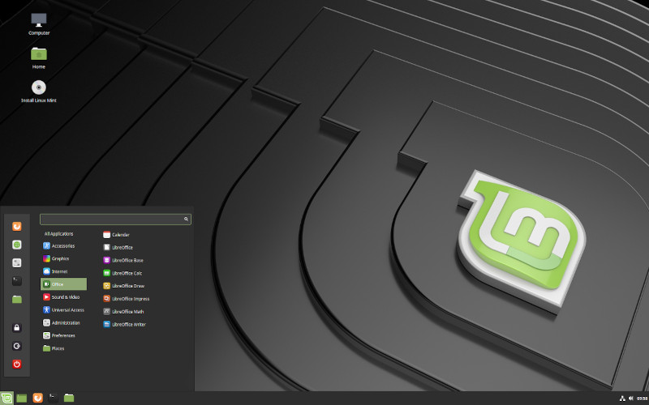

Switched to Linux
2019-02-05

I own three desktops and a laptop. After 8 months of frustration with Windows 10 I switched my computers to Linux. I wrote a post about it 3 Reasons I Quit Windows 10.
My main workstation desktop is running Linux Mint Cinnamon. This is a custom desktop computer I build myself from parts bought online from Newegg. Its about 7 years old and I'm itching to build or buy something better.
Since I use my computers mainly for design and web development they don't need to be super powerful gaming systems.
I installed Linux Mint XFCE on my old Dell Vostro Laptop for minor tasks. As well as on my old HP Pro 3130 MT desktop I use as a media server. I wrote a post that goes into more detail about my Plex Server.
My 3rd desktop is a File Server running Open Media Vault. This one is another custom desktop I built from parts purchased from Fry's.
Its been a few months since I switched to Linux and I don't miss Windows at all. Its not for everyone but it works for me.